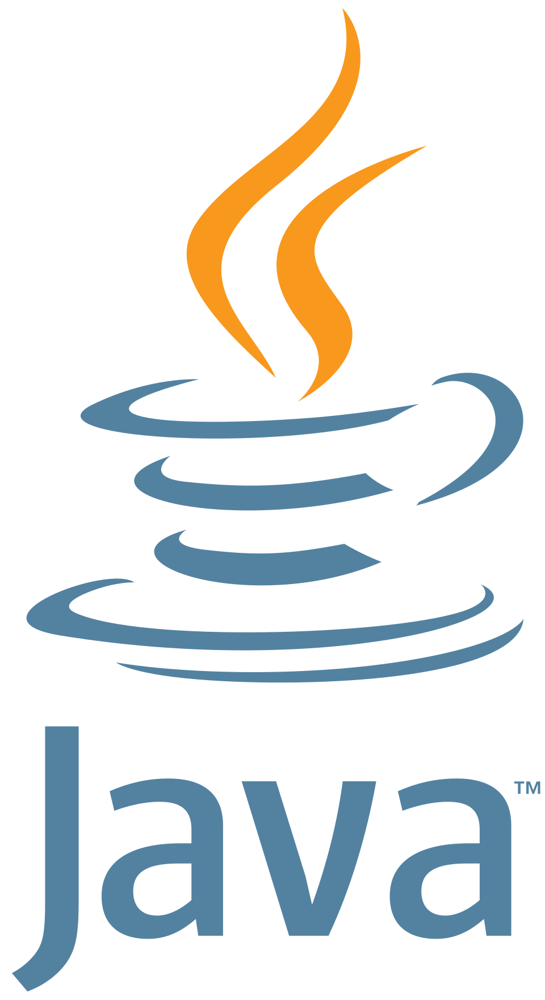
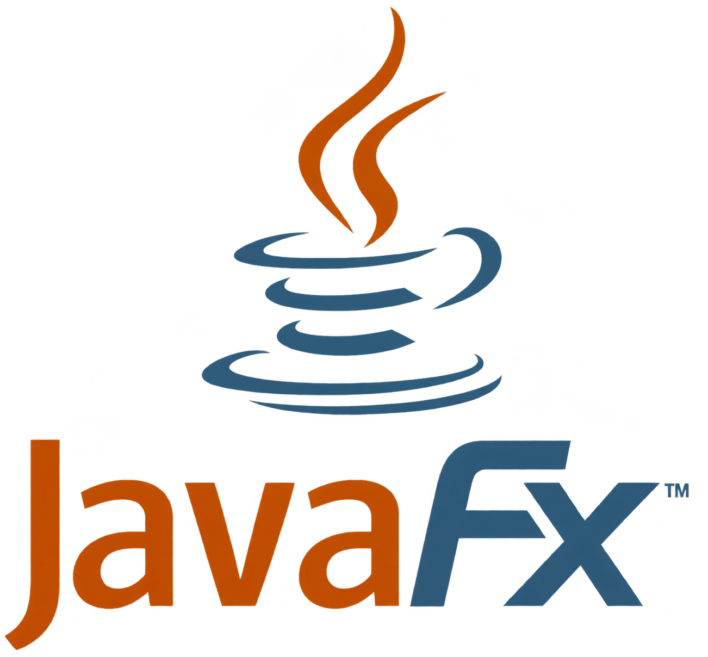

Consultoría Documentum
Modelos documentales, seguridad, workflows y evolución de plataformas ECM.
Soy analista y desarrollador especializado en OpenText Documentum, con experiencia en proyectos de gran alcance para sectores de energía, infraestructuras, construcción, seguros y servicios públicos.
Mi trabajo conecta arquitectura, desarrollo y operación: desde modelos documentales y seguridad hasta migraciones completas, integraciones Java, rendimiento y automatización.
Diseño, modernizo y optimizo ecosistemas documentales críticos. Convierto migraciones complejas y procesos de negocio en soluciones fiables, medibles y preparadas para evolucionar.
Una de mis principales áreas de diferenciación es el diseño de aplicaciones internas a medida con JavaFX y DFCs. Estas herramientas llevan a una interfaz sencilla únicamente las operaciones de Documentum que necesita cada equipo, sin añadir complejidad innecesaria.
Modelos documentales, seguridad, workflows y evolución de plataformas ECM.
Herramientas JavaFX y DFCs que simplifican las operaciones de cada equipo.
Transformación de contenido y metadatos, reconciliación y modernización del repositorio.
Java, REST, SAP HANA y PowerShell para conectar sistemas y optimizar procesos.

Java DFCs
DFCs
JavaFXDe la arquitectura a producción y soporte.
Ver mi trayectoriaConsultoría, desarrollo e integración de plataformas documentales en entornos empresariales.
Estudio, automatización y mejora de procesos empresariales con Java, Documentum DFCs, SAP HANA/ABAP y PowerShell. Soporte de incidencias y evolutivos sobre perfiles, objetos documentales y workflows.
Análisis estratégico para modernizar el ecosistema documental y definir la hoja de ruta de migración de activos digitales, evaluando el destino óptimo de la información.
Responsable técnico de la migración de Documentum 7.2 a 22.2: reestructuración del repositorio, transformación de tipos documentales y contenidos, ingeniería inversa y nuevas lógicas de negocio.
Análisis, diseño y desarrollo de aplicaciones conectadas a Documentum mediante servicios REST. Optimización de rendimiento, migraciones desde Lotus Notes, estimaciones y coordinación técnica.
Desarrollo de un sistema de exportación de contenido y metadatos desde Documentum hacia Microsoft 365, incluyendo volumetrías y automatización con PowerShell y batch.
Creación y configuración de aplicaciones D2: modelos documentales, seguridad, TBOs, diccionarios, taxonomías, matrices y transformaciones documentales.
Etapas anteriores
Aplicaciones Java de generación documental, geolocalización, SQL y cargas masivas.
Desarrollo web para distintos sectores, mantenimiento WordPress, SEO y gestión de cambios.
Soporte de TPV y facturación, diseño web y producción gráfica.
Diseño y desarrollo aplicaciones de escritorio con JavaFX y Documentum DFCs para resolver operativas internas concretas: consultas, validaciones, cargas, actualizaciones masivas, administración controlada y automatización de tareas sobre el repositorio.
Herramientas personalizadas aplicadas al negocio. Cada solución se diseña según sus procesos, reglas operativas y necesidades reales, adaptando la tecnología a la forma de trabajar de cada equipo.
El objetivo es cubrir exactamente la necesidad del equipo mediante una solución focalizada, evitando incorporar productos adicionales de OpenText cuando el caso de uso no requiere toda su funcionalidad.
Recreaciones anonimizadas con datos ficticios. No corresponden a entornos productivos.
Ejemplo recreado y anonimizado de una interfaz para localizar, consultar y gestionar contenido del repositorio.
Ejemplo recreado y anonimizado de un panel para analizar capacidad, distribución y uso del almacenamiento.
Ejemplo recreado y anonimizado de una herramienta para importar, validar y ejecutar actualizaciones masivas con trazabilidad.
Ejemplo recreado y anonimizado de un panel para seguir lotes, transformaciones y reconciliar origen y destino.
Una base sólida en desarrollo web y sistemas, reforzada con certificaciones específicas y aprendizaje continuo en Documentum, automatización e inteligencia artificial.
I.E.S. Los Sauces
I.E.S. Los Sauces
Certificación 5-8055
IA Generativa en Microsoft 365
Tecnología documental, desarrollo Java y automatización empresarial.
Esta web recoge una muestra de mi recorrido, mi especialización y la forma en la que trabajo con plataformas documentales.
Puedes escribirme por correo o contactar conmigo a través de LinkedIn.